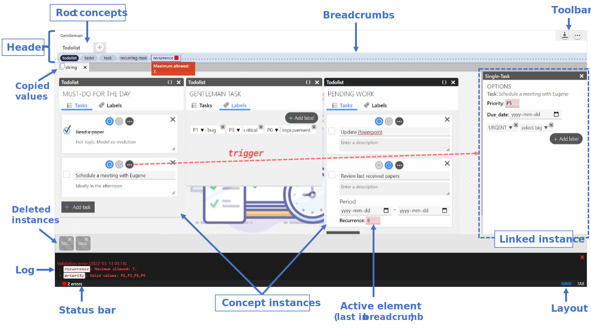

Getting started
What is Gentleman?
Gentleman is a lightweight web-based projectional editor that allows you to create and use models. The goal is to make software development and modeling more accessible. In Gentleman, a model is structured using concepts and interacted with using projections.
Projectional editing
Gentleman is a projectional editor, i.e. it does not need a parser to continuously scan the user's input (code) to build the abstract syntax tree (AST).
Projections rules creates a visual representation of the AST, allowing the user to interact with it directly.
The flow of a projectional editor follows a fill-in-the-blank approach, as most of the content is generated by the rules.
This approach eliminates the risk of syntactic errors (e.g., typos) and allows you to focus on meaningful input to produce the desired model.
Since the editor doesn't parse the content, you are free to use any representations (e.g., tables, forms, diagrams) that best suit your task.
In addition, those representations can be easily interchanged and safely composed.
Example
Let's say we want to model a library to organize and manage a collection of books. This requires some concepts to structure and hold the information. For this example, we define the following three concepts.
Library
Holds the list of books.
Book
Holds the information we need about a book, makes references to the defined authors.
Author
Holds the information we need about an author.
By coupling these concepts with some projections, we obtain the following editor.
This editor allows you to define a library and a collection of books.
The editor is preloaded with a list of authors that can be referenced by a book.
Setup
To add an editor to your application, decorate an HTML tag with the attribute data-gentleman. Every HTML element on the page with this attribute will have a Gentleman instance attached with the editor rendered inside.
Defining Handlers
In Gentleman, the editor's behaviour can be customized through handler. A handler is a function attached to a message (trigger).
const Handlers = {
"value.changed": function () {
let result = validate(this.conceptModel);
if(!result.pass) {
this.logs.add(result.errors, "Validation error", LogType.ERROR);
}
},
"close.editor": function () {
save(this.conceptModel);
}
};
User interface
Gentleman adopts a minimalistic approach to its design.
Header
The header presents the root concepts (available for instantiation), the toolbar and the breadcrumb.
Interaction
Like most editors, Gentleman features contextual assistance, copy-pasting, undo and redo, and allows you to keep track of the model's state.
Create an instance
Every editor exposes the concepts available for instanciation in the header. To create a new instance, select the desired concept.
Linked instance
An instance can quickly become too crowded as you modify it. Fortunately, because the view is a composition of projections, they can each be manipulated separetely. To open part of an instance in a separate window (linked instance),
- Select an element
- Open in new window:
Ctrl + E
As this is a projection window and not an actual instance, closing it will have no side effects on your values.
Navigation
Gentleman supports both mouse and keyboard navigation. With the mouse it's simply a matter of clicking on the element you want to focus on. With the keyboard you can use the arrows to access close-by elements or the `Tab` key to iterate over the elements. When the focus element has children elements, press `Enter` to focus on its children and `Esc` to exit the container.
Copy/Paste
In Gentleman copy/paste works just as with any editor.
- Select source element
- Copy value:
Ctrl + C - Select target element
- Copy value:
Ctrl + V
A value is attached to a concept, not a projection. Therefore copying does not include the projection (visuals) but only the value attached to the concept.